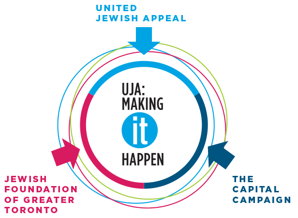
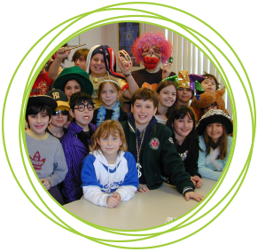
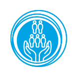

Letter from UJA Federation Leadership
The Jewish community of Toronto can trace its roots back to the 1800s. As the Jews of Eastern Europe, living under oppression and persecution, fled their towns and villages, many arrived in Toronto seeking freedom where they would be able to openly and joyously celebrate their Judaism.
In 1917, Toronto’s first Jewish federation – the Federation of Jewish Philanthropies – was incorporated, replacing the unorganized collection of individual Jewish charities, each knocking on doors and collecting funds for their own causes.
As Toronto’s Jews became an increasingly organized, unified force, so too did their dreams. Understanding that the Jewish community would continue to grow due to the waves of immigration flooding into Toronto, their dreams, and the dreams of UJA Federation, turned to building a city – a community – where Jews could flourish and succeed
Fast forward to a century later and UJA Federation is celebrating its Centennial, onehundred years of providing leadership, philanthropy and service to the Toronto and global Jewish communities, we continue to do the work we started a century ago. And, with a network of more than 100 partner agencies, we continue to transform the lives of Jews in Toronto, Israel and across the Jewish world.
After all, it’s our tradition.
Appreciatively,

Bruce Leboff
Chair, Board of Directors

Adam Minsky
President and CEO

2017 Highlights
Together this community helped raise $148 million, impacting the lives of thousands of Jews, here in Toronto and worldwide. We are building infrastructure for new generations, working on innovative projects that will solve Jewish poverty and creating original initiatives to grow the Jewish identity of our future leaders.
OUR COLLECTIVE IMPACT
Total Fundraising: $148 Million
Annual Campaign
$58,001,000
Designated & Special Campaign Gifts
$35,738,000
Jewish Foundation
$35,355,000
Capital Project Donations
$9,750,000
Other Income*
$7,945,000
Corporate Partners Revenue
$760,000
Government Grants
$544,000
Total Fundraising
$148,093,000
*Other income includes sponsorship and program & event registration
OUR JEWISH FUTURE
New Dimensions: In the past year, The Sarah and Chaim Neuberger Holocaust Education Centre began offering a special learning opportunity that uses groundbreaking technology so visitors can converse with Holocaust survivors now and into the future.
USC Shoah Foundation’s New Dimensions in TestimonySM integrates advanced filming techniques, specialized display technologies, and next-generation natural language processing to provide an intimate experience with eyewitnesses to history who are uniquely qualified to offer personal reflections and answer direct questions about their firsthand experiences with the Holocaust.
Thousands of visitors from across the GTA including students and members of the publci have interacted with this incredible program.
COMMUNITY BUILDING
Sheff Family Building ground-breaking: On October 15th, 2017, we held the long awaited groundbreaking for the expanded home of the new Sheff Family Building, the future home of the expanded Prosserman Jewish Community Centre on Bathurst Street, just north of Sheppard Avenue.
The fully completed 27 acre Sherman Campus, located in the heart of the Carscadden Greenbelt, will be able to provide a robust offering of programs including swim and fitness classes, youth groups, arts and culture programs, and the return of the summer camp, among many other programs and social services, all in an effort to expand the current offerings and reach of the campus within the community.
“Community Centres are so important to our neighbourhoods. It’s where we come together as a city. This centre will provide a sense of community, bring neighbours together and connect people by acting as a space for recreation and community gatherings.”
- Toronto Mayor John Tory
DISASTER RELIEF
Hurricane Irma Relief: In response to this tragedy, our compassionate and generous community came together, raising more than $52,000 to help victims of Hurricane Irma.
Hurricane Harvey Relief: We were able to raise more than $112,000 which was part of a North American-wide effort with our partners at the Jewish Federations of North America that raised $14 million in total.
The funds provided emergency aid and relief in the immediate aftermath of the Hurricanes and are also being used to rebuild infrastructure, restore synagogues and assist day schools. None of this could have happened without the support of our donors.

Our Approach
UJA Federation can only have the impact it does on all the big issues facing the Jewish people through an integrated approach to fundraising. By combining efforts, playing off synergies and leveraging collaborations, the unrestricted campaign, the Jewish Foundation and the capital campaign, are able to affect all aspects of Jewish communal life here in Toronto, Israel and around the world.
INTEGRATED FUNDRAISING
UNITED JEWISH APPEAL
Finding Innovative Solutions
Funds raised by UJA’s Annual Campaign with the help of over 600 volunteer canvassers support more than 100 agencies to strengthen Jewish Life and assist those in need in Toronto, Israel and around the world.
Annual campaign raised $58,001,000
JEWISH FOUNDATION OF GREATER TORONTO
Life Is Built on Strong Foundations
The Jewish Foundation is a community foundation that makes charitable giving easy and rewarding so that individuals and families can fulfill their personal philanthropic goals and translate their charitable vision into viable solutions to some of our community’s most pressing needs.
The Jewish Foundation raised $35,355,000
THE CAPITAL CAMPAIGN
Building the Infrastructure for a Vibrant Jewish Community
Since 2000, UJA Federation’s Tomorrow Campaign has created three hubs of Jewish life in downtown, mid-town, and York Region to ensure there is infrastructure to support the programmatic, fitness and social needs of the growing Jewish population in the Greater Toronto Area.
Capital Project Donations received amounted to $9,750,000
OUR 6 PRIORITIES
JEWISH ADVOCACY
The Jewish voice must be heard! UJA supports advocacy for Jews and for Israel, locally and around the globe, to ensure the safety and security of all Jews, everywhere.
JEWISH COMMUNITY
We are One. In times of universal celebration or crisis, UJA brings together every Jew, regardless of religious, political, or other affiliation.
CONNECTIONS TO ISRAEL
Israel is our cherished homeland. UJA invests in a range of programs that strengthen our ties with Israel and offers a helping hand with aliyah and absorption, vulnerable populations, and education in Israel.
JEWISH POVERTY RELIEF
UJA cares deeply for our community’s most vulnerable – those living in poverty, those with mental and physical disabilities, new immigrants, seniors, and Holocaust survivors – any Jew in need.
JEWISH EDUCATION
Jewish education determines our Jewish future. UJA supports 48 Jewish day schools and supplementary Hebrew schools across the GTA.
JEWISH IDENTITY
Jewish life is beautiful. UJA inspires the next generation to embrace it by supporting a range of programs that awaken the Jewish spirit.

How We Make It Happen
With UJA Federation's strategic plan guiding our focus and direction, we are finding solutions for the biggest challenges facing the Jewish people. Here is how we are making change in this community happen:
JEWISH EDUCATION
The Issue:
In recent years our Jewish Day Schools have seen a decrease in enrollment between grades 8 and grades 9. We have conducted a large scale research project and identified the rising cost of tuition contributed directly to a decrease in enrollment numbers.
How we helped:
Through innovative thinking and strategic partnerships we have managed to secure $15 million in gifts which managed to reduce tuition at TanenbaumCHAT by 30%.
Impact:
The tuition decrease led to a 90% retention rate from the north campus of TanenbaumCHAT, and enrollment has increased by 40 students in the first year of the amalgamated southern campus.
JEWISH POVERTY RELIEF
The Issue:
Jewish Torontonians increasingly struggle to make ends meet and, in the GTA alone, approximately 24,000 Jews live in poverty including 5,000 seniors, many of whom are Holocaust survivors, and 4,000 children. Poverty in our community is on the rise with many experiencing significant challenges finding gainful employment or launching careers. Many are still lacking basic necessities such as food, clothing, housing and transportation. Those with mental and physical illness, people with disabilities, new immigrants, seniors and Holocaust survivors, and families where both parents are working are all affected by poverty and this seriously restricts participation in Jewish communal life.
How We Helped:
Over this past year, as part of our efforts to combat Jewish poverty, we allocated over $7,000,000 to 11 social service partner agencies while working with them to identify and understand the needs of our vulnerable community members.
Impact:
The funds provided to our partners helped:
1,400 indivuduals access financial assistance to make ends meet.
400 campers the opportunity to attend Jewish summer camp through a subsidy program
85 families with rent subsidies, so they could afford housing in the Bathurst St. corridor which allowed them to be part of our Jewish community.
232 free loans to those in financial need.
3,000 low income Holocaust survivors with home care, transportation, meals, and other critical services
More than 300 newcomer families with integration support.
1,850 low income Holocaust survivors with home care, transportation, meals and other critical services.
Over 1,000 people with employment support
CONNECTION TO ISRAEL
Over the past 70 years, we have forged a strong bond with the State of Israel with investments in Aliyah and absorption, vulnerable populations, education, healthcare and cutting-edge technology. UJA Federation has partnered with Bat Yam, Eilat/Eilot and Sderot in order to supports programs that will have significant social impact.
The Issue:
For the past 13 years, Sderot has suffered considerably by living with the threat of daily rocket attacks. Since the summer of 2014 there has been a period of relative quiet but the enormous task of rebuilding the community remains. There is a need to invest in education and community programming that offers opportunities for the next generation to become Israel’s community and economic leaders.
How We Helped:
Fortified Sderot’s Community Center (as a JFC-UIA National project); developed a strong, vibrant Youth Department for Sderot, now fully operated by the municipality; stabilized formal and informal activities and services in the city, over the years, in times of peace.
Now Sderot had the ability to operate independently in times of Emergency and to help other communities in Israel when under stress.
Impact:
350 kindergarten children are taking part in the Robomath program
Matriculation rates in Sderot are ranked top among all towns in southern Israel.
500 elementary school children are using the new science laboratories.
Providing educational guidance and job counselling to thousands in the Netivim Centre for Young Adults. 250 students received full college scholarships.
200 junior high and high school pupils are taking part in a research-oriented math program.
250 Students received full college scholarships
20 elementary and high school math teachers are taking part in in-service training.
JEWISH ADVOCACY
The Issue:
Boycott, Divestment, Sanctions (BDS) is a form of discrimination. In targeting all Israelis, BDS is a modern-day blacklist and a form of discrimination based on national origin. Just as boycotts have targeted Jews throughout history, today BDS activists call for a boycott of the citizens of the world’s only Jewish state and the only liberal democracy in the Middle East.
How We Helped:
The Ontario Legislative Assembly voted to pass an anti-BDS motion introduced by Member of Provincial Parliament Gila Martow. Across the province, CIJA spearheaded the campaign in favour of this motion. In partnership with Federations and Hillel Ontario, CIJA launched a campaign that mobilized over 12,000 Ontarians to contact their MPP in support of the motion
Impact:
By passing this motion and condemning BDS as a form of bigotry, The Ontario Legislature has sent a clear message that BDS has no place in our province.
JEWISH IDENTITY
The Issue:
How do we create a Jewish journey for our children? One of our focuses this year was on Jewish Summer Camps. Camping is a magical experience deeply impacting kids’ Jewish identity. However, for first timer children and parents overnight camp can be an intimidating prospect. There was a need to increase awareness and enrollment for full sessions at Jewish Summer camps, especially for younger children.
How We Helped:
UJA Federation piloted a new program called The Weekender. The Weekender, sponsored by the UJA’s Silber Family Centre for Jewish Camping, is designed to introduce first time campers to Jewish overnight camp in a safe and fun 2-3 day session. It is a fully sponsored innovative program which allows children entering Grades 1 to 6 to get a taste of Jewish summer camp
Impact:
In its first year, The Weekender managed to introduce 180 children to their first summer camp experience. The program has surpassed its initial goal by 20%. Follow up surveys participants show a strong intention to enroll into summer camp in subsequent years
JEWISH COMMUNITY
The Issue:
How do you bring a community together to celebrate 100 years of UJA Federation in Toronto?
How We Helped:
Over a year of planning came to fruition. More than 350 community members departed on the biggest mission in our community’s history. UJA Federation’s Centennial Journey to Israel was a culmination of the many creative minds, hearts and souls of our amazing professional staff at UJA, as well as our partners in Israel and our amazing clergy and outstanding lay leaders.
Impact:
Over 350 community members were able to forge a deeper and stronger connection to the work of UJA Federation, not only in Israel but locally and around the world. This will affect fundraising and volunteer recruitment for years to come.
UJA FEDERATION APPROVED
ALLOCATIONS 2017/18
UJA Federation combined operating, fundraising and community planning expenses represent 11.7% of total revenues, inclusive of annual Campaign (unrestricted and restricted), special campaigns, designated gifts, capital project donations,bequests and endowments, income from investments and sundry revenue.
Combined estimated revenues total $148 million

Looking Ahead to 2018
As 2017 comes to an end we are looking forward to the innovative projects we have already set in motion for next year. Here is a glimpse into the exciting work UJA is making happen in 2018.
JEWISH COMMUNITY
Israel will be turning 70 in April of 2018. Planning is already under way as we get ready to celebrate 7 decades of Israel’s independence. We will be partnering with organizations throughout the city to bring our community a variety of events that showcase Israel’s culture and the diversity of our community. The festivities will ulminate in 2 marquee events, one taking place on April 19th, to celebrate Yom Haatzmaut and the other at UJA’s Walk with Israel which will be taking place on May 27th. The Walk brings out more than 20,000 community members who will come together to celebrate Israel and the Toronto Jewish Community.
JEWISH POVERTY RELIEF
DoortoDoor, a Collective Impact initiative, funded by our generous donors for the most vulnerable Jewish seniors and Holocaust survivors, will help provide vital resources to the social services they need. The approach is a game changer for the community in how organizations will work together and take a systemic approach to meeting the needs of our community’s most vulnerable.
DoortoDoor is a unique model, connecting our agencies through a centralized outreach and access point, to help them identify and reach out to those in need, by matching them with critical supports and services. Through a web portal, DoortoDoor leverages a sophisticated call centre and information and referral hotline to provide a connection to our Jewish social services. This program is set to launch in 2018.
JEWISH ADVOCACY
Your Ward News, a hateful and blatantly antisemitic paper, has long been a source of deep concern to members of the Toronto Jewish community. The paper promotes racist, homophobic, misogynist, and pro-Nazi material. Last year, The Minister of Public Services, Judy Foote has issued an order forbidding Canada Post to deliver Your Ward News. It appears that the paper is now being delivered by private distributors, as printed copies have recently resurfaced across the GTA.
CIJA, represented by a member of CIJA Toronto’s Legal Task Force, has status at the hearing, and we are taking the position that the order be permanent. It is our sincere hope that the board will uphold the Minister’s decision, and that not a single copy will be delivered by Canada Post in the future
JEWISH EDUCATION
UJA’s Koschitzky Centre for Jewish Education is reimagining the landscape of Jewish education. Start-up grants have been made available for Jewish content before and after care programs that will provide both a Jewish education and meet the childcare needs of families.
CONNECTIONS TO ISRAEL
The lay and professional leadership of the Israel and Overseas Committee will be developing and launching a new and exciting strategic investment portfolio which will guide UJA Federation’s giving for the next few years.
In Israel: We will continue to support STEM education for children in the under-served communities in Israel with most of our efforts focusing on communities in Bat Yam, Sderot and Eilat / Eilot. These will include support given to the Cyber Development Fund, Robotics classes for kindergartens and elementary schools, advanced STEM classes in junior and high schools; and inspiring students to make the most of their potential through upgrading labs, academic tutoring and inspiring field trips.
Overseas: Our work continues to support relief for vulnerable Jewish communities in Eastern Europe and South America and strengthen ties between the Jewish Community of Greater Toronto, Israel and eastern Europe through a variety of Israel engagement programs and Jewish young leadership programs.
JEWISH IDENTITY
As part of our work to increase engagement among emerging adults, we will be launching a new Birthright post-engagement strategy with a strong focus on relationships. The intent of the strategy is to ensure that the Birthright trip is also a portal to involvement with Toronto’s Jewish community once participants return from Israel.